UI改善 P1（表示・文言の整理）比較
ブランチ feature/ui-p1-polish。2026-10-15 に main と変更後をそれぞれ
npm run screenshots（demo:reset
後の模擬データ）で撮影。各画像の左が変更前、右が変更後。画像を押すと原寸で開く。データ・API・DB・マイグレーションは変更していない。
撮影画像の全体は before/（main）と
after/（変更後）にある。after/extra-*.png
は操作後の状態（ファイルを選んだ直後・「対応不要にする」を押した直後）を追加で撮ったもの。
1. 宿題一覧（新郎新婦）
src/app/(couple)/mypage/tasks/page.tsx・TaskFilterTabs.tsx
各行に回答方法（選ぶ・入力する・ファイルを送る・確認のみ）と「あと◯日」を追加。状態フィルタは折り返して全タブを表示
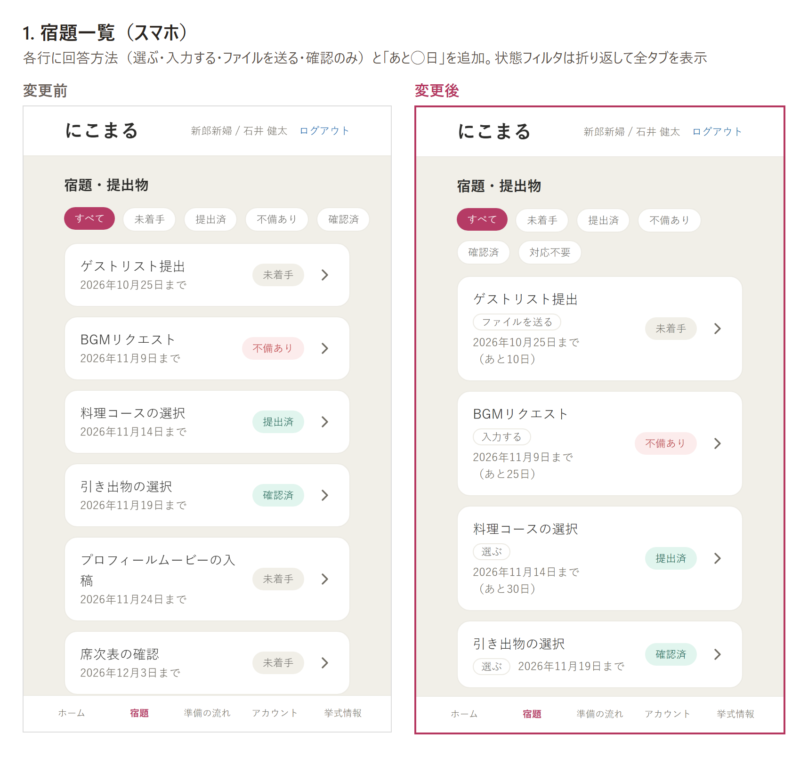
変更前: before/13-mobile-couple-tasks.png ／ 変更後: after/13-mobile-couple-tasks.png


各行に回答方法のラベルと相対期限を追加（確認済・対応不要には出さない）
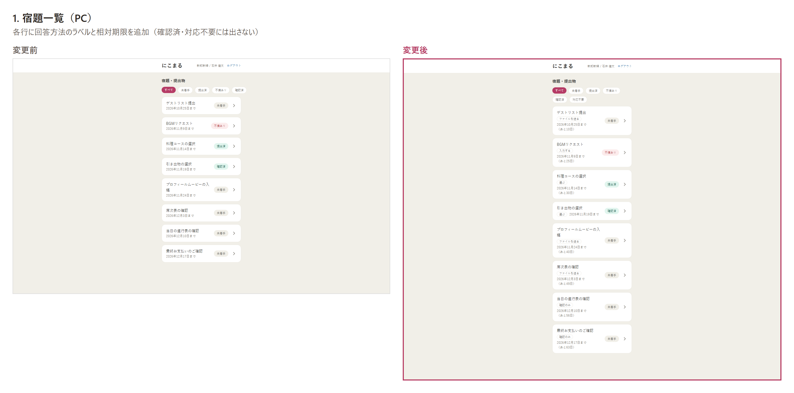
変更前: before/09-couple-tasks.png ／ 変更後: after/09-couple-tasks.png


2. マイページ（新郎新婦）
src/app/(couple)/mypage/page.tsx
「次にやること」に相対期限を追加。主ボタンは「宿題・提出物を見る」だけにし、準備タイムライン・お知らせは1行のリンクに
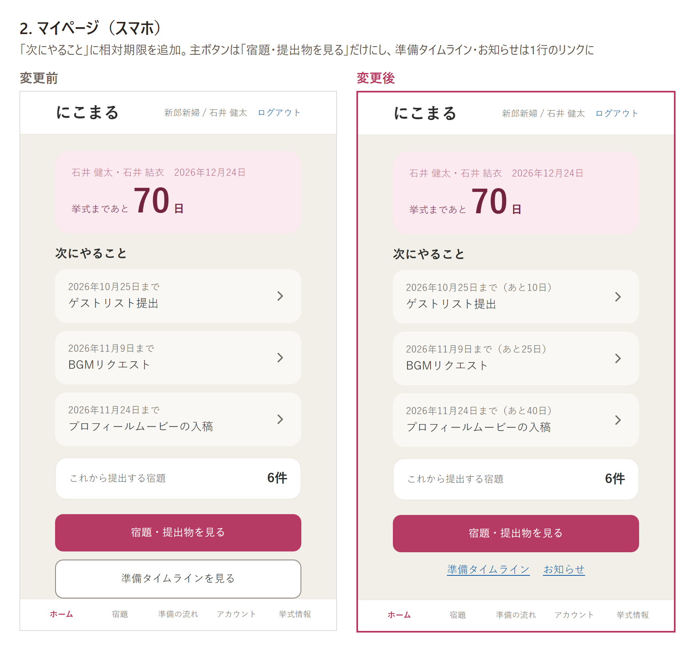
変更前: before/12-mobile-couple-mypage.png ／ 変更後: after/12-mobile-couple-mypage.png


「次にやること」に相対期限を追加。ボタンを主1つ＋テキストリンクに整理
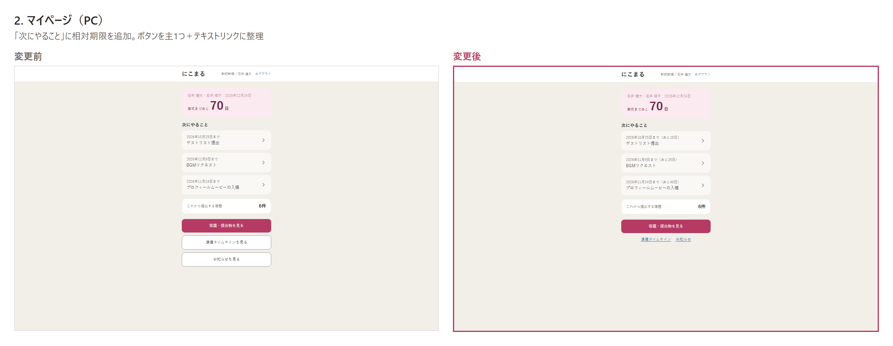
変更前: before/08-couple-mypage.png ／ 変更後: after/08-couple-mypage.png


3. 宿題提出（新郎新婦）
src/app/(couple)/mypage/tasks/[taskId]/SubmitForm.tsx
一番下までスクロールしても「提出する」は固定ナビに隠れなかった（390px 幅で select・text・file・none を確認）ため、余白は変更していない。
選んだカードに枠と「選択中」の文字を表示（色だけに頼らない）。ラジオボタンと送信内容はそのまま
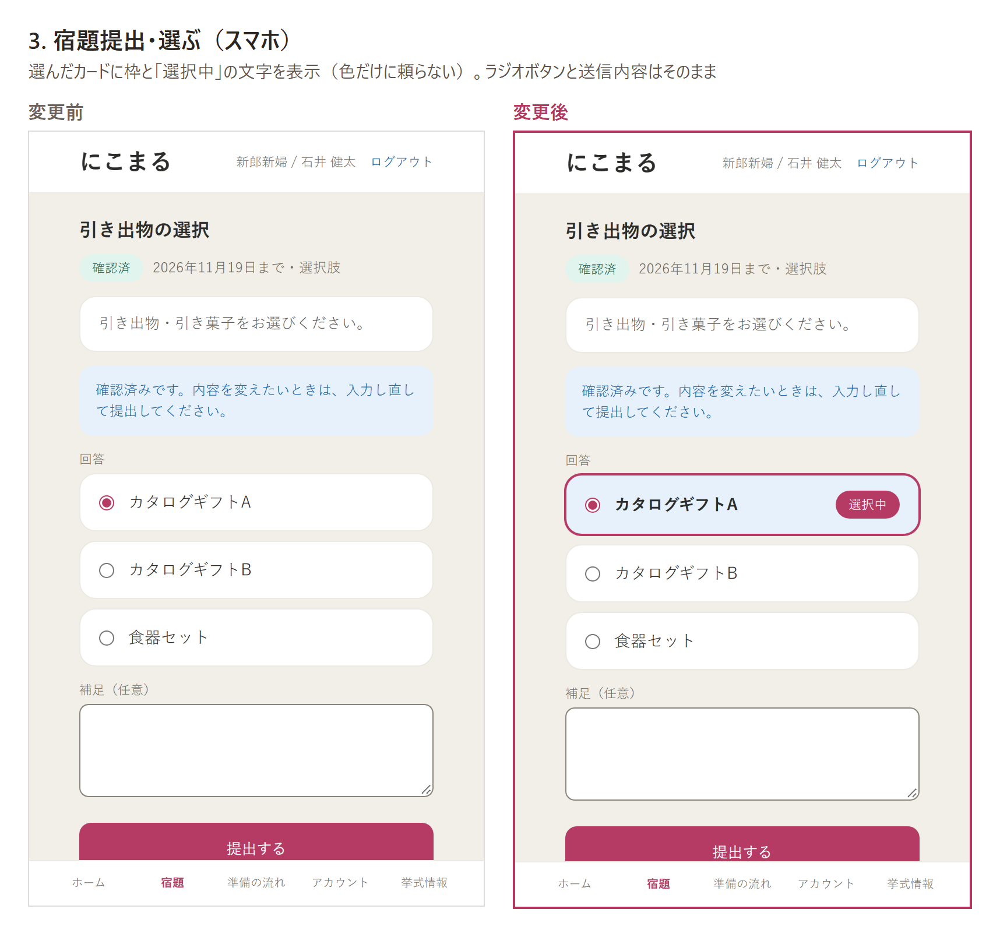
変更前: before/25-mobile-couple-task-submit-select.png ／ 変更後: after/25-mobile-couple-task-submit-select.png


選んだカードに枠と「選択中」の文字を表示
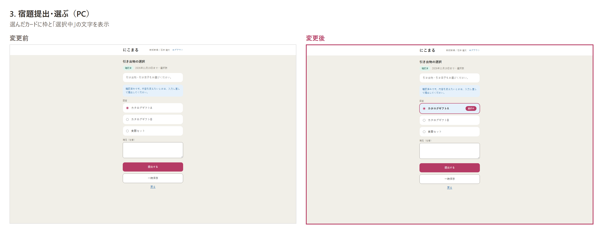
変更前: before/10-couple-task-submit.png ／ 変更後: after/10-couple-task-submit.png


英語の標準ファイル欄（Choose File / No file chosen）を日本語の「ファイルを選ぶ」ボタンに置き換え
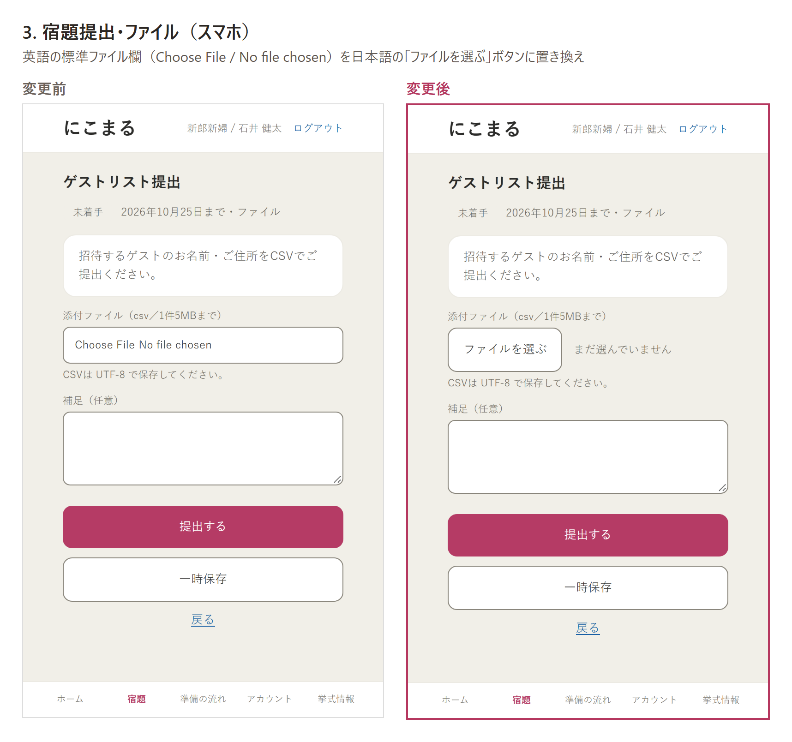
変更前: before/27-mobile-couple-task-submit-file.png ／ 変更後: after/27-mobile-couple-task-submit-file.png


英語の標準ファイル欄を日本語の「ファイルを選ぶ」ボタンに置き換え
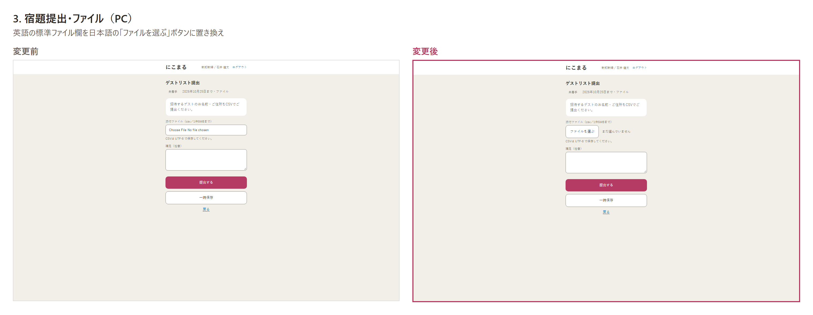
変更前: before/17-couple-task-submit-file.png ／ 変更後: after/17-couple-task-submit-file.png


ファイルを選ぶと、ファイル名とサイズを表示（変更後はファイルを選んだ直後の状態。送信はしていない）
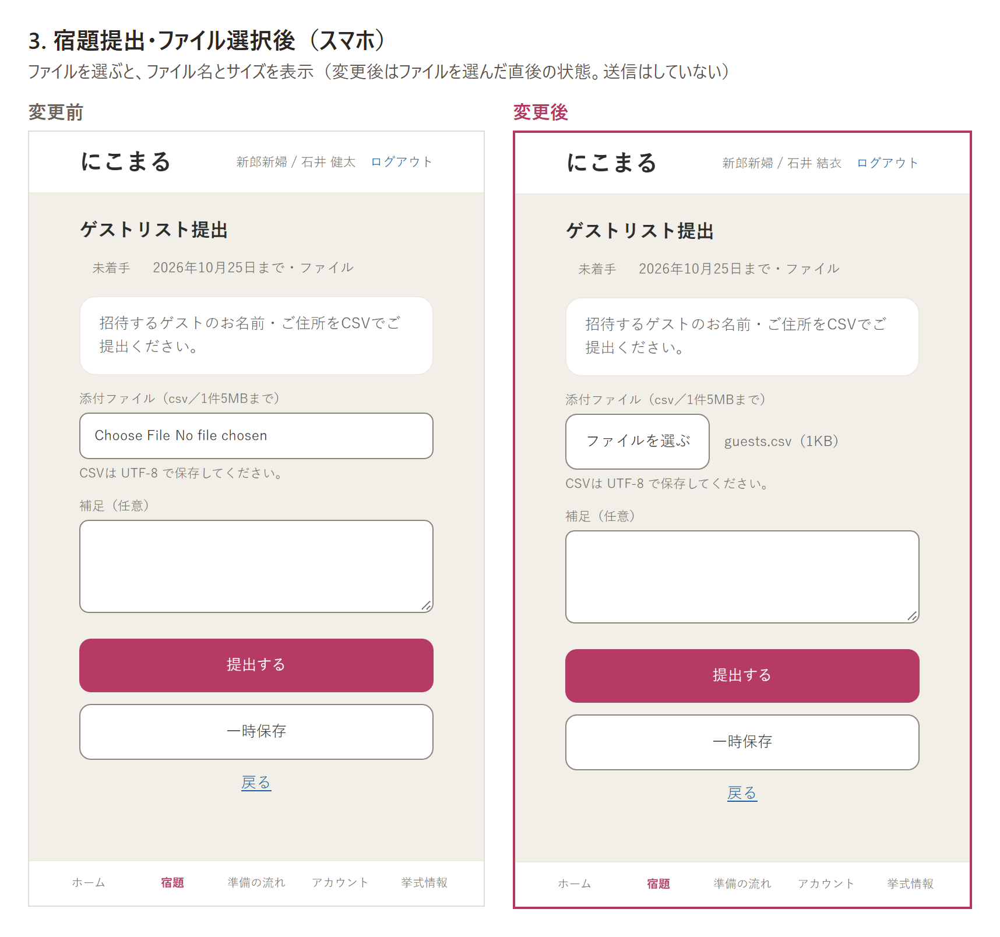
変更前: before/27-mobile-couple-task-submit-file.png ／ 変更後: after/extra-27-file-chosen.png

4. ダッシュボード・画面文言の内部ID（プランナー）
src/app/(staff)/dashboard/page.tsx ほか
同じ種類の表記は、ダッシュボードの（S01／S02）（S03）、打ち合わせ記録の「案件詳細（K02）」、提出物確認の「案件詳細（K02）」、利用状況の「（6-12）」からも削除した。コメントはそのまま。
「（6-8）」「（K01）」「（D02）」「（N01）」など、資料の節番号・画面IDを画面の文言から削除
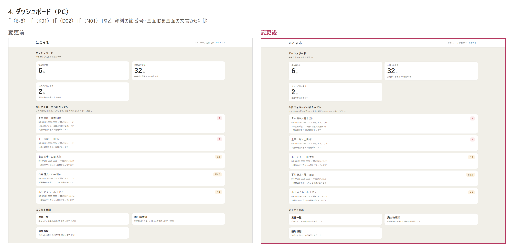
変更前: before/02-planner-dashboard.png ／ 変更後: after/02-planner-dashboard.png


「直近の算出結果です（6-8）」から節番号を削除
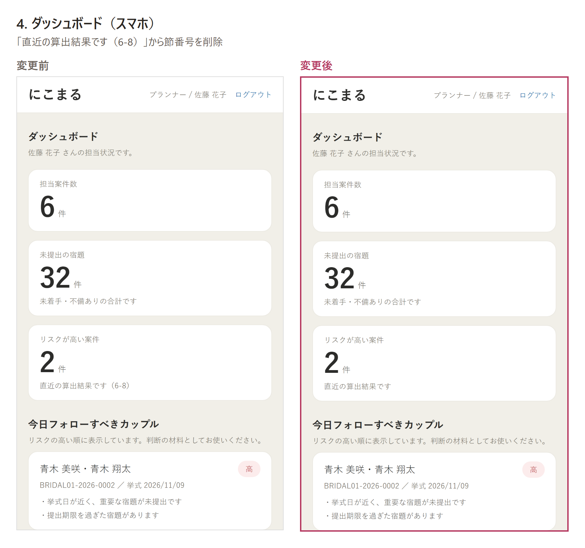
変更前: before/14-mobile-planner-dashboard.png ／ 変更後: after/14-mobile-planner-dashboard.png


5. 案件一覧（プランナー）
src/app/(staff)/cases/page.tsx・RiskBadge.tsx
今回の模擬データは全案件のリスクが算出済みのため、「未算出」を「—」にした変更は画像には現れない。読み上げと title では「未算出」と伝える。
案件番号が2行に折れないよう1行に保つ（表は横に送って読む）
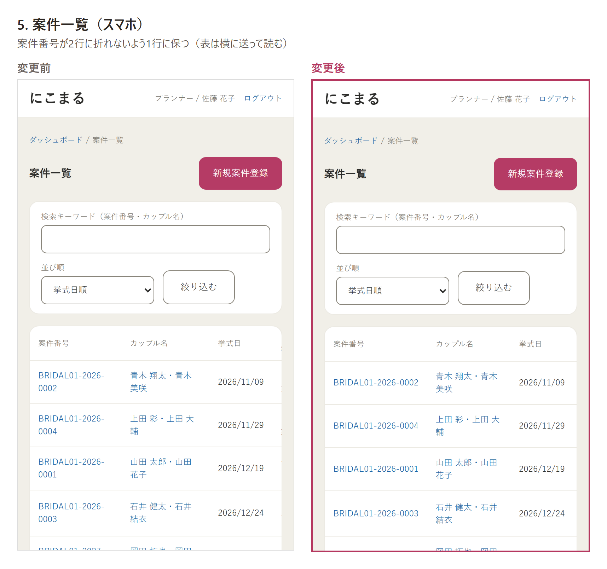
変更前: before/21-mobile-case-list.png ／ 変更後: after/21-mobile-case-list.png


リスク「未算出」は「—」で目立たなく表示（今回の模擬データは全件算出済みのため、画像には現れない）
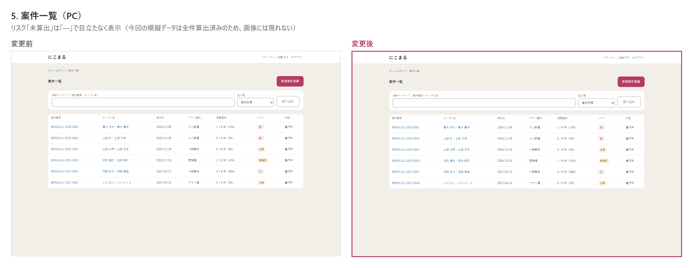
変更前: before/03-case-list.png ／ 変更後: after/03-case-list.png


6. 案件詳細の宿題一覧（プランナー）
src/app/(staff)/cases/[caseId]/TaskSection.tsx
「対応不要にする」を、リンク風の「期限を変更」と見分けられる注意色の枠付きボタンに
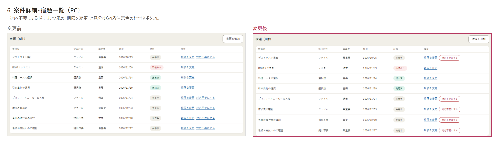
変更前: before/04-case-detail.png ／ 変更後: after/04-case-detail.png


押すとその行に「対応不要にしますか？ はい／やめる」を表示（変更後は「席次表の確認」で押した直後）。成功時は「対応不要を解除で元に戻せます」と通知
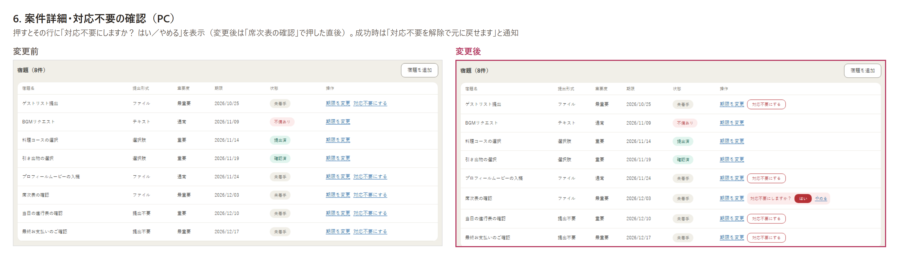
変更前: before/04-case-detail.png ／ 変更後: after/extra-04-waive-confirm.png

7. 提出物確認（プランナー）
src/app/(staff)/submissions/[submissionId]/page.tsx
回答本文を「提出内容」カードの最上部に大きく表示し、提出形式・日時・期限・状態は下に小さく
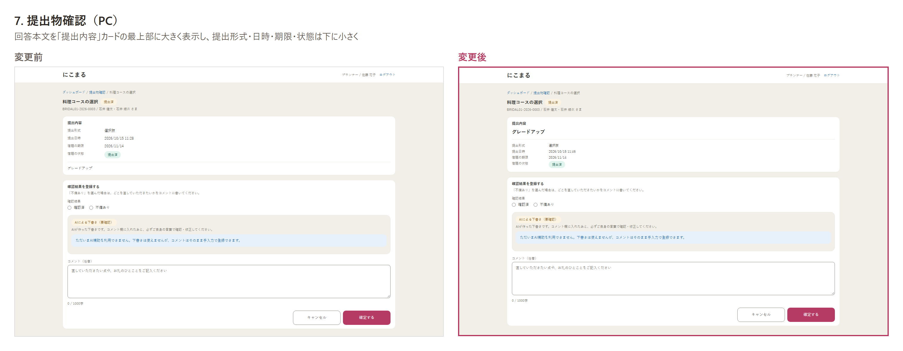
変更前: before/06-submission-review.png ／ 変更後: after/06-submission-review.png


回答本文を最上部に大きく、提出形式などは下に小さく
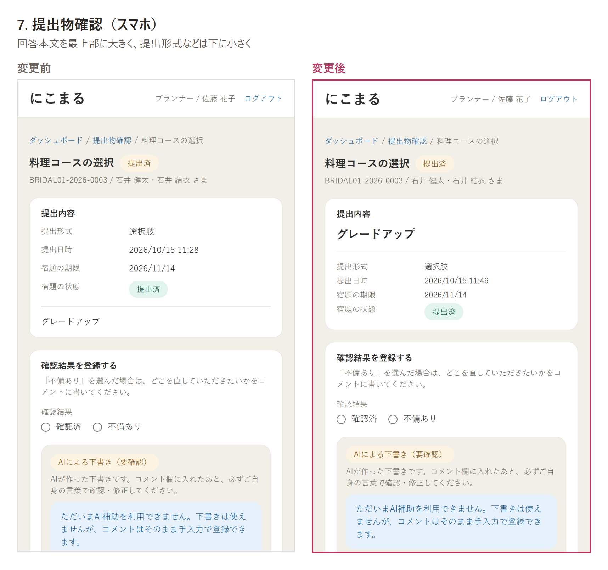
変更前: before/23-mobile-submission-review.png ／ 変更後: after/23-mobile-submission-review.png